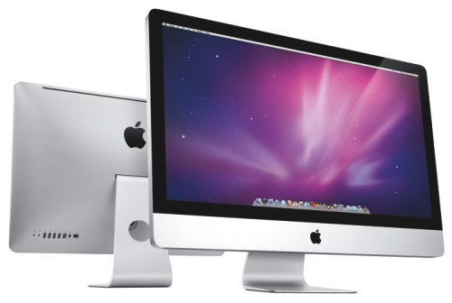

หน่วยแสดงผล
หน่วยประมวลผลกราฟิกส์ (อังกฤษ: GPU: graphics processing unit) หรือ หน่วยประมวลผลทางภาพ (อังกฤษ: VPU: visual processing unit) คือหน่วยประมวลผลพิเศษที่รับภาระการให้แสงและเงาคอมพิวเตอร์กราฟิกส์สามมิติแทนหน่วยประมวลผลกลาง ซึ่งหน่วยประมวลผลกราฟิกส์มีได้ทั้งที่เป็นการ์ดหรือเป็นส่วนหนึ่งของแผงวงจรหลักก็ได้ แต่ส่วนใหญ่ในปัจจุบันอยู่ในรูปของการ์ดแสดงผล
ช่วยในการประมวลการทำงานในด้านภาพกราฟิกบนหน้าจอคอมพิวเตอร์ให้มีประสิทธิภาพมากยิ่งขึ้น การทำงานของจีพียูจะคล้ายกับซีพียู แต่จะแตกต่างกันตรงที่การ์ดแสดงผลสมัยเก่าทำหน้าที่แปลงข้อมูลดิจิตอลเป็นสัญญาณเท่านั้น แต่ปัจจุบันการ์ดแสดงผลสมัยใหม่ได้รวมความสามารถในการแสดงผลภาพสามมิติมาไว้เป็นมาตรฐาน และได้เรียกชื่อใหม่ว่า หน่วยประมวลผลกราฟิกส์ โดยสามารถลดงานด้านการแสดงผลของซีพียูได้มาก
|  |
|---|